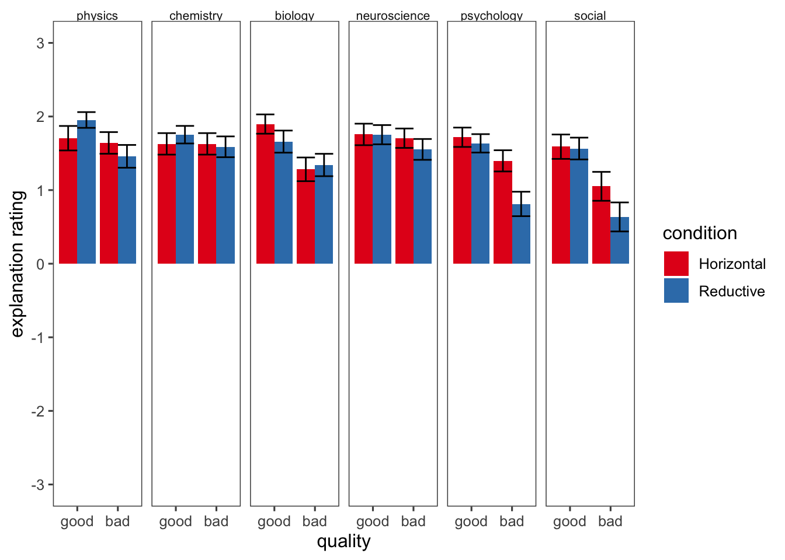

Replication of Study 1 by Hopkins, Weisberg, and Taylor (2016, Cognition)
Author
Howard Chiu (howardchiu@stanford.edu)
Published
December 4, 2023
Introduction
Research Interests
I am currently a first-year PhD Student in the Graduate School of Education in the Developmental and Psychological Sciences program, and I am interested in using transdiagnostic longitudinal neuroimaging methods to understand the developmental trajectories of individuals within and across functional areas, so as to better understand how neural development relates to educational and other well-being outcomes.
This paper, and the seductive allure effect in general, is relevant to my interest in communicating scientific findings precisely and concisely. I might also be susceptible to this very effect in my own desire for explanations as I pivot from working as a school psychologist to neuroscience research as a PhD student.
Description of stimuli and procedures
The original study aimed to investigate whether participants would prefer reductive explanations and whether this would differ by the science of the phenomenon. Horizontal explanations were defined as referring “only to the science from which the phenomenon itself was drawn (e.g., using biological language to explain a biological phenomenon)”, while reductive explanations were defined as explanations which “included information from the next lower level in the hierarchy (e.g., using chemical language to explain a biological phenomenon)”.
Participants were presented with horizontal and reductive explanations of phenomenon in 6 sciences: physics, chemistry, biology, neuroscience, psychology, and social sciences. The stimuli were carefully constructed so that the reductive information would not provide any explanatory power, allowing the authors to separate out a potential preference for explanations with a reductive form even in the absence of any helpful reductive content.
The original authors observed that there was a main effect of explanation level, where participants rated reductive explanations as of higher quality than horizontal explanations. They also observed that there was a relatively positive view of neuroscience combined with a relatively negative view of psychology, with information in these domains positively and negatively influencing the perceived quality of the reductive explanations respectively.
Challenges
Participants may approach this task, and the explanations provided, with vastly different background knowledge, as was observed in the original study. As the replication sample will be crowd-sourced online via Prolific, participants may be motivated to complete the task as fast as possible rather than attempt to maximise their performance on the task, even with the instructional check at the start of the experiment and the attentional check in the middle of the Rating Explanations task.
Hopkins, E. J., Weisberg, D. S., & Taylor, J. C. V. (2016). The seductive allure is a reductive allure: People prefer scientific explanations that contain logically irrelevant reductive information. Cognition, 155, 67–76. https://doi.org/10.1016/j.cognition.2016.06.011
The primary research questions were “whether participants would prefer reductive explanations and whether this would differ by the science of the phenomenon”.
The measure of interest was the mean rating of quality of reductive and horizontal explanations of various scientific findings provided to participants along a sliding scale ranging from 3 (very good) to -3 (very poor).
The replication utilised the methodology exactly as reported in the original study for the Rating Explanations task, with the exception of using a sample completely recruited from MTurk and no undergraduates. The replication study also omitted tests of scientific literacy, reflective thinking, logical syllogisms, as well as perceptions of science (Sections 2.4.2 to 2.4.5 of the original study) to reduce completion time.
There were a high number of participants who failed the attention checks (70 out of 163 participants) in the replication study.
However, even when the participants who had failed attention checks (either or both) were included in the analysis, the replication study did not manage to replicate the main effect of explanation quality, as well as the significant effect of explanation level.
The repository for the previous replication is hosted here.
Original Findings
The regression in the original study revealed a significant main effect of explanation level (as reported in Figure 2 of original paper): reductive explanations (n=131, M=1.26, SD=1.71) were rated signficantly higher on average than horizonal explanations (n=128, M=1.04, SD=1.88). Effect sizes (Cohen’s d for within-subjects tests) were only reported for pairwise differences between adjacent fields in the hierarchy of sciences (Figure 4 of original paper).
Participants (20 MTurk workers and 40 undergraduates out of the complete recruited sample of 167 MTurk workers and 152 undergraduates) who failed attention checks were excluded from the sample (i.e. 60 out of the total recruited sample of 319 participants).
Methods
Power Analysis
No power analysis or sample size justification was provided in the original paper, and the replication sample utilised the same MTurk sample size (n=167) from the original experiment to preserve power across both experiments.
A post-hoc power analysis of the original study with two independent study groups (reductive and horizonal explanations) with the quality of explanations as the main continuous effect and alpha at 0.05 yielded a post-hoc power of 16.5%. The post-hoc power analysis was conducted with G*Power 3.1.
As explanation level was a between-subject manipulation, the power calculation can be reframed as the number of items tested rather than the number of participants in the study. In this case, each participant rates 12 explanations, and thus the number of explanations rated in each condition is 1008. The main analysis of a two-tailed t-test of two independent means thus gives us a post-hoc power of 78.4%.
Planned Sample
Like the original and replication samples, English-speaking adult participants residing in the United States will be recruited online (via Prolific instead of MTurk). Participants who complete the task and pass both attention checks will be included in the final sample for analysis. Details about the attention checks can be found in the Procedure or Control sections below.
We will be matching the original MTurk sample size due to the power analysis conducted above. However, we will need to be mindful of the number of exclusions due to failed attention checks, as there was a high number in both the original study (60 participants) and the replication study (70 participants).
Materials
The detailed process of constructing the stimuli can be found in the original paper. All materials for the Rating Explanations task can be found in Appendix A of the original paper and will be used without modifications.
Procedure
The following procedure is quoted from the original article:
All participants completed an online survey hosted by Qualtrics. The survey had six components: Rating Explanations, Science Literacy, Reflective Thinking, Logical Syllogisms, Perceptions of Science, and Demographic Information. All participants completed the Rating Explanations component first and the Demographic Information last. The other four components were presented in a random order after the Rating Explanations component. The Rating Explanations task used a 2 (Explanation Level: horizontal, reductive) x 2 (Quality: good, bad) x 6 (Science: physics, biology, chemistry, neuroscience, psychology, social science) design. To be consistent with previous studies of this effect (Weisberg et al., 2008, 2015), explanation level was between-subjects: Participants were randomly assigned to either the horizontal or reductive condition. Quality and science were within-subjects: All participants rated two explanations from each science, one good and one bad.
Unlike the original study, the participants will not be completing the Science Literacy, Reflective Thinking, Logical Syllogisms, and Perceptions of Science sections. They will thus only complete two components - the Rating Explanations, followed by Demographic Information.
Rating Explanations
The following paragraphs are quoted from the original article:
All participants completed the Rating Explanations task first. For this task, participants used a sliding scale ranging from 3 to -3 to indicate their responses. They were first given instructions on how to use the slider; this also served as a check that participants were reading instructions. They were told to use the slider to select 0 on the first page in order to proceed with the survey. If they selected anything other than 0, they were directed to another page asking them again to select 0. Participants who did not select the correct response on this second page were excluded from analyses.
After these general instructions on using the slider, participants were given instructions for the explanations task (modified from Fernandez-Duque et al., 2015):
You will now be presented with descriptions of various scientific findings. All the findings come from solid, replicable research; they are the kind of material you would encounter in a textbook. You will also read an explanation of each finding. Unlike the findings themselves, the explanations of the findings range in quality. Some explanations are better than others: They are more logically sound. Your job is to judge the quality of such explanations, which could range from very poor (-3) to very good (+3).
On each trial, participants were presented with a description of a scientific phenomenon, which was displayed for 10 s before participants could advance to the next screen. On the next screen, an explanation was displayed below the phenomenon, and participants were instructed to rate the quality of the explanation. Participants rated 12 explanations, with an attention check trial administered after the first six (Oppenheimer, Meyvis, & Davidenko, 2009). This trial was similar in format to the others. First, a description of a phenomenon was presented for 10 s. When participants advanced to the next screen, instead of seeing an explanation, they saw text instructing them to select 3 on the scale. Participants who did not select 3 were excluded from analyses.
Demographics
The following procedure is quoted from the original article:
At the end of the survey, participants answered a series of demographic questions, including gender, age, and year in school (for undergraduates) or highest degree completed (for MTurk workers). Participants from both samples were asked to pick the category that most closely matched the field of their highest degree (physical sciences, social sciences, engineering, humanities, health, and business) and to give the exact field. They were also asked whether they had taken any college- or graduate-level courses in anthropology, chemistry, physics, sociology, economics, neuroscience, psychology, political science, biology, or philosophy.
Since undergraduates will not be recruited for this sample, the demographic questions will only include gender, age, highest degree completed, category that closely matched the field of their highest degree (physical sciences, social sciences, engineering, humanities, health, and business), and college- or graduate-level coursework.
In addition, this rescue project not be asking about coursework in anthropology and philosophy as these subjects are tangential to the main research questions. Instead, the list of courses will have a combined social sciences item for anthropology/economics/philopsphy so that there will be 6 scientific disciplines in the list which are aligned to the rating explanations. (The original paper also averaged sociology, economics, and political science into a single post-hoc measure when analysing participants’ perceptions of science as they found that the three domains were highly correlated.) This rescue study preserves the coursework question as the original study observed that “the total number of sciences (out of 6) in which a participant had taken courses was a significant predictor of overall difference scores in a linear regression: F (1, 214) = 6.27, p < 0.05, R2 = 0.02.”
Controls
Both attention checks are placed within the Rating Explanations block of the survey.
The first attention check simply requires participants to select 0 on the sliding scale ranging from -3 to 3 after reading instructions on the Rating Explanations task. The second attention check occurs after participants rate 6 out of the 12 explanations. A phenomenon is also presented for 10 seconds, but “when participants advanced to the next screen, instead of seeing an explanation, they saw text instructing them to select 3” on the same sliding scale.
In addition, the description of each scientific phenomena was “displayed for 10 s before participants could advance to the next screen” to ensure that they had sufficient time to read before they could view the explanations provided. This delay should also ensure greater deliberation as participants could not rush through the questions as quickly.
The exact stimuli used for attention checks were not provided in the original paper, so the attention checks in the replication were used.
Analysis Plan
The following procedure for the key analysis of interest is quoted from the original article:
Data from the explanations task were analyzed with a mixed-effects linear regression model (using the lme4 package in R) predicting the rating given on each trial from the sample (MTurk, undergraduates), the quality of the explanation (good, bad), the explanation level (horizontal, reductive), and the science from which the phenomenon was drawn (physics, chemistry, biology, neuroscience, psychology, and social science). Sample and explanation level were between-participants variables and quality and science were within-participants. All possible interactions between variables were tested.
Similar to the replication but not the original study, the between-participants variable “sample” will not be available for analysis as there will not be an undergraduate population recruited.
The key analysis of interest is a t-test within the lmerTest R package for the difference between means of ratings for reductive explanations and horizontal explanations. This will yield a t-test statistic with the corresponding p-value.
Differences from Original Study and 1st replication
Unlike the original study and replication, the sample will be recruited online via Prolific rather than Amazon Mechanical Turk (MTurk). The other differences have been detailed in the sections above.
Given that the experimental materials and procedure involved in testing the primary research questions remain identical, and the analysis plan is identical save for one between-participants variable which did not make a difference in the analysis in the original study, these adjustments to the original study are not expected to make a difference based on claims in the original article.
Actual Sample
Differences from pre-data collection methods plan
Results
Data preparation
Data preparation following the analysis plan. Code has been kindly provided by the author of the replication study, and will mostly be used as is with some edits for debugging and naming conventions.
Load qualtRics, tidyverse, and lme4 libraries.
Read in data from original study, replication study, and current rescue study.
Remove columns unnecessary for primary analysis.
Select participants who passed both attention checks.
Reshape to extract summary statistics for included participants.
Convert ratings into integers and factor variables into categories (good and bad explanations, horizontal and reductive explanations).
Run 2x2x6 linear mixed-effects linear regression predicting explanation rating based on the quality of the explanation (good or bad), the explanation level (horizontal or reductive), and the science from which the phenomenon was drawn (6 sciences).
Visualize plots.
Conduct exploratory analyses if needed.
### Data Preparation#### Load Relevant Libraries and Functionslibrary(qualtRics) #To read data from Qualtricslibrary(tidyverse) #To clean data and plot graphs in ggplot
── Attaching core tidyverse packages ──────────────────────── tidyverse 2.0.0 ──
✔ dplyr 1.1.3 ✔ readr 2.1.4
✔ forcats 1.0.0 ✔ stringr 1.5.0
✔ ggplot2 3.4.4 ✔ tibble 3.2.1
✔ lubridate 1.9.3 ✔ tidyr 1.3.0
✔ purrr 1.0.2
── Conflicts ────────────────────────────────────────── tidyverse_conflicts() ──
✖ dplyr::filter() masks stats::filter()
✖ dplyr::lag() masks stats::lag()
ℹ Use the conflicted package (<http://conflicted.r-lib.org/>) to force all conflicts to become errors
library(lme4) #To run mixed-effects linear regression model in original study
Loading required package: Matrix
Attaching package: 'Matrix'
The following objects are masked from 'package:tidyr':
expand, pack, unpack
library(lmerTest)
Attaching package: 'lmerTest'
The following object is masked from 'package:lme4':
lmer
The following object is masked from 'package:stats':
step
library(brms) #To run Bayesian supplementary analyses
Loading required package: Rcpp
Loading 'brms' package (version 2.20.4). Useful instructions
can be found by typing help('brms'). A more detailed introduction
to the package is available through vignette('brms_overview').
Attaching package: 'brms'
The following object is masked from 'package:lme4':
ngrps
The following object is masked from 'package:stats':
ar
# raw_data <- read_survey("../data/pilotb.csv")#### Data exclusion / filteringraw_data <- raw_data |>select(-c('Feedback')) #delete columns not used in analysisdata_num <- raw_data |>mutate(ID =1:nrow(raw_data)) #add participant ID columndata_num <- data_num |>select(Att_1, everything()) #move attention check 2 to front of data frame#### Prepare data for analysis - create columns etc.#convert to long formatdata_long <- data_num |>pivot_longer(cols ='P1-HG_1':'S4-RB_1', names_to ="full_item", values_to ="rating", values_drop_na=TRUE)#specify item attributesdata_long <- data_long |>mutate(science =substr(full_item, start=1, stop=1))data_long <- data_long |>mutate(item =substr(full_item, start=1, stop=2))data_long <- data_long |>mutate(quality =substr(full_item, start=5, stop=5))data_long <- data_long |>select(-full_item)data_long <- data_long |>filter(rating!="")#recode item namesdata_long$quality <-ifelse(data_long$quality=="G", "good", "bad")data_long$science <-ifelse(data_long$science=="P", "physics", data_long$science)data_long$science <-ifelse(data_long$science=="C", "chemistry", data_long$science)data_long$science <-ifelse(data_long$science=="B", "biology", data_long$science)data_long$science <-ifelse(data_long$science=="N", "neuroscience", data_long$science)data_long$science <-ifelse(data_long$science=="Y", "psychology", data_long$science)data_long$science <-ifelse(data_long$science=="S", "social", data_long$science)#convert columns to intended data types for analysisdata_long$rating <-as.integer(as.character(data_long$rating))#exclude participants who failed attention check 1# data_excluded_both <- data_long |> # filter(Slider1_1==0)#exclude participants who failed attention check 2# data_excluded_both <- data_excluded_both |> # filter(Att_1==3)
Results of control measures
#total number of participantsunfiltered_rows = data_long %>%nrow()unfiltered_total = (unfiltered_rows /12)#total number of participants who passed attention checks# filtered_rows = data_excluded_both %>%# nrow()# filtered_total = (filtered_rows / 12)#number of excluded participants# num_excluded = unfiltered_total - filtered_total# num_excluded#final number of included participants# filtered_total
There was a high number of participants who failed the first attention check. I will need to relook at the formatting to emphasize that they should select 0.
Confirmatory analysis
#Read in and format data# data <- data_excluded_bothdata <- data_long# Convert to factordata$science <-as.factor(data$science)data$quality <-as.factor(data$quality)data$condition <-as.factor(data$Condition)#Reorder levels of the factors to facilitate contrast coding in regressions:data$science <-relevel(data$science, ref ="social")data$science <-relevel(data$science, ref ="psychology")data$science <-relevel(data$science, ref ="neuroscience")data$science <-relevel(data$science, ref ="biology")data$science <-relevel(data$science, ref ="chemistry")data$science <-relevel(data$science, ref ="physics")#Backward difference coding; each level is compared to the mean of the one before it contrasts(data$quality) <-matrix(c(-1/2,1/2), nrow=2)contrasts(data$condition) <-matrix(c(-1/2,1/2), nrow=2)#Deviation coding: each level is compared to the grand mean (physics is in the intercept)contrasts(data$science) <-matrix(c(-1,1,0,0,0,0,-1,0,1,0,0,0,-1,0,0,1,0,0,-1,0,0,0,1,0,-1,0,0,0,0,1), nrow=6)
In the original experiment, participant, science and items are random effects, explanation level and quality are fixed effects, and participant rating is the dependent variable.
The original authors also note that “the bestfitting model included random intercepts by participant and item as well as a random effect of item on the slope for the quality variable”.
This replication project does not have different samples of participants. Therefore, to the best of my understanding, the lmer equation is
This graph illustrates the results of the first replication. Code is not reproduced here to minimize clutter, but can be accessed at the GitHub repository linked above in the “Summary of prior replication attempt” section. 
This replication with the pilot sample (without exclusions for failing attention checks) actually finds a main effect of explanation quality, as well as an interaction effect between explanation level and explanation quality. However, there is no main effect of explanation level.
Commentary
Although the 7-point Likert scale seems rudimentary, the same authors continued to use this measure for rating explanation quality, even in subsequent papers (Hopkins, Weisberg, & Taylor, 2019). A related study investigating the seductive allure of technical language (Silas et al., 2021) on explanations about how vaccination, immunisation and herd immunity work also utilised the same 7-point Likert scale.
References
Hopkins, E. J., Weisberg, D. S., & Taylor, J. C. V. (2019). Does expertise moderate the seductive allure of reductive explanations? Acta Psychologica, 198, 102890. https://doi.org/10.1016/j.actpsy.2019.102890
Silas, J., Jones, A., Weiss-Cohen, L., & Ayton, P. (2021). The seductive allure of technical language and its effect on covid-19 vaccine beliefs and intentions. Vaccine, 39(52), 7590–7597. https://doi.org/10.1016/j.vaccine.2021.11.027